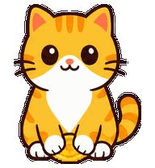
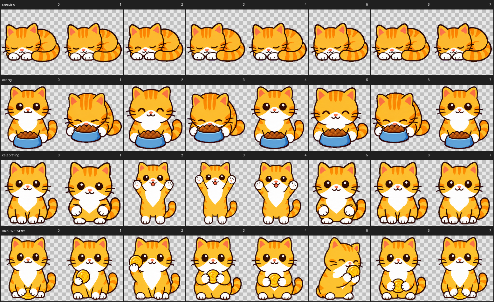
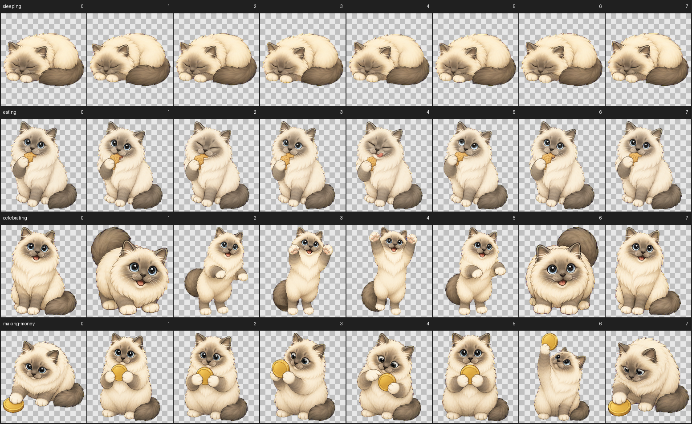

当前
固定映射 + 重复借用
workingmaking-money
awake_resteating
sleepingsleeping
所有点击celebrating
长按 / 拖动缺少连续跑动语义
结果：工作、清醒休息和睡眠中的点击反馈几乎一样；拖动时宠物被窗口带走，却没有朝目标方向跑起来。
v0.9 动画专项 · 方案审核
这一页只冻结状态、动作池、触发条件和回退合同。绿色标记已有素材，黄色标记可明确复用，灰色标记仍需生成。
Current → Target
Classic Pro 与多多现有 4 个 Pro 动作都能播放，但基础状态、点击回应和拖动反馈大量复用同一段素材，动作虽然触发了，语义和方向却不够清楚。
结果：工作、清醒休息和睡眠中的点击反馈几乎一样；拖动时宠物被窗口带走，却没有朝目标方向跑起来。
目标：一个业务状态可以拥有多个低频动作和专属互动，但每次只按明确规则选择一个；完成后重新解析最新状态。
Interactive route studio

Semantic matrix
“1→N”不是随机播放全部动作，而是一个基础状态拥有基础循环、低频环境动作、状态感知互动和业务事件四层选择空间。
| 基础状态 | 基础循环 | 环境动作池 | 状态感知单击 | 长按拖拽跑动 | 业务事件 |
|---|---|---|---|---|---|
| working | keyboard-work | making-moneydesk-stretchbrief-glance | work-ack | run-preparerun-left/rightrun-settle | lunch-reliefwork-end-celebrateincome-milestone |
| awake_rest | rest-breathe | eatinglook-aroundgroomingyawn | rest-ack | run-preparerun-left/rightrun-settle | first-show-wavelunch-relief |
| sleeping | sleeping | sleep-turndream-bubblecurl-up | ear-twitch | 唤醒 → run-preparerun-left/rightrun-settle | 睡眠期间不强制触发 |
多多首轮允许通过合同复用 Classic 的语义槽结构，但不复用 Classic 图片。Classic 动作稳定后，再按同一动作名称为多多生成对应素材。
Real asset evidence


Runtime contract
Modal / 窗口关闭 ＞ 长按拖拽跑动 ＞ 状态感知单击 ＞ 业务事件 ＞ 环境动作 ＞ 基础循环。双击不再拥有独立产品动作。
状态专属动作 → 通用同语义动作 → 当前基础循环。不得按 pet_id 写一次性特判。
总时长 + max(500ms, 25%)。超时只恢复状态并记录异常，不截断正常长动作。
Decision gates
已有动作明确复用；真正缺失的工作、单击和方向跑动动作进入生成队列。
逐帧时长、锚点、动作完成、超时和回退全部通过后，Classic 才能成为默认。
复用动作名称、触发与测试，不复用图片，也不降低多多身份一致性。
大幅动作必须更新透明轮廓，Panel、菜单和拖拽仲裁不得回退。
这样可以先解决“动作不流畅且看不出区别”的核心问题，同时避免一次生成两套仍然需要返工的素材。